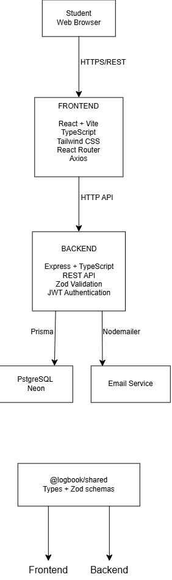
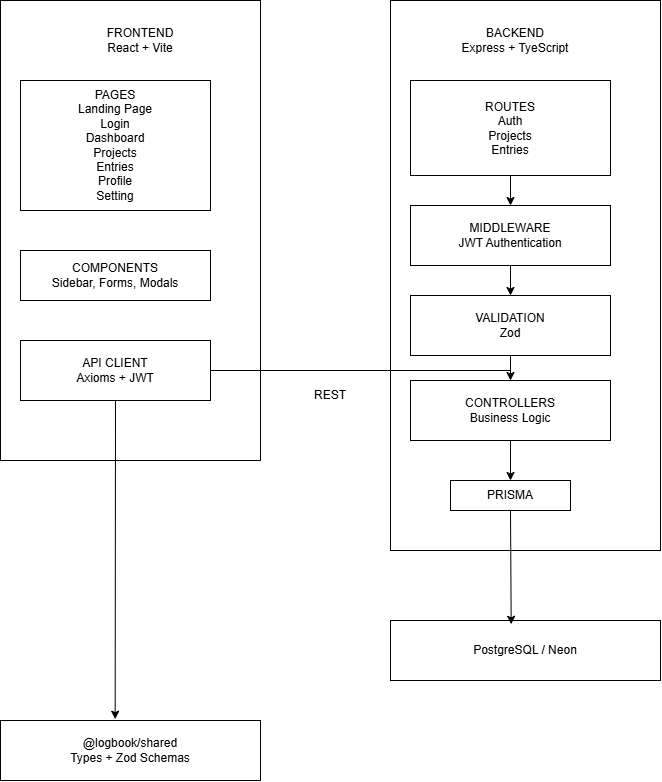

Initial System Design
1. High-Level System Architecture
The Digital Logbook is designed as a non-monolithic web application. The system separates the user interface from the backend API and database.

Architecture Overview
The system consists of the following main components:
- Frontend: React, Vite, and TypeScript provide the user interface.
- Backend: Express and TypeScript provide the hand-written REST API and application logic.
- Database: PostgreSQL, hosted using Neon, stores persistent data.
- Prisma: Provides database access from the backend.
- Authentication: JWT-based authentication protects authenticated API requests.
- Email Service: Nodemailer supports email verification and password-reset functionality.
- Shared Package:
@logbook/sharedcontains types and validation schemas shared between the frontend and backend.
Communication
The frontend communicates with the backend using HTTP REST requests. Authenticated requests include a JWT token.
The backend validates incoming requests using Zod before processing business logic and accessing the database through Prisma.
2. Component Architecture
The application is divided into separate frontend and backend components. This separation allows the frontend and backend to be developed, tested, and deployed independently.

Frontend
The frontend is responsible for the user interface, client-side routing, form interaction, and communication with the backend API.
The main frontend components are:
- Pages — Application screens such as Dashboard, Projects, Entries, Profile, and Settings.
- Reusable Components — Shared interface elements such as the Sidebar, forms, modals, and page headers.
- API Client — Uses Axios to communicate with the backend REST API.
- Routing — React Router manages public and authenticated routes.
Backend
The backend provides the application's hand-written REST API and contains the business logic.
The main backend components are:
- Routes — Define the HTTP API endpoints.
- Middleware — Handles authentication and request processing.
- Validation — Zod schemas validate incoming request data.
- Controllers — Implement application business logic.
- Utils — Provide supporting functionality such as password hashing and email delivery.
- Prisma — Provides access to the PostgreSQL database.
Shared Package
The @logbook/shared package contains common TypeScript types and Zod
schemas used by both the frontend and backend. This reduces duplication
and keeps the data structures used across the application consistent.
3. Database Design
The Digital Logbook uses PostgreSQL as its persistent data store. Prisma ORM provides access to the database from the Express backend.
Main Entities
| Entity | Purpose |
|---|---|
| User | Stores student account information |
| Project | Stores projects belonging to a student |
| EntryField | Defines the custom fields available for a project |
| LogbookEntry | Stores individual logbook entries |
| EntryValue | Stores the value of a custom field for an entry |
| PasswordReset | Stores password-reset information |
Key Relationships
- A user can own multiple projects.
- A project can contain multiple entry fields and logbook entries.
- An entry contains values corresponding to the fields defined by its project.
- Password-reset records are associated with the user who requested the reset.
Data Integrity
Foreign keys are used to maintain relationships between entities. Unique constraints prevent duplicate values where required, and cascading deletes support account deletion and associated data removal.